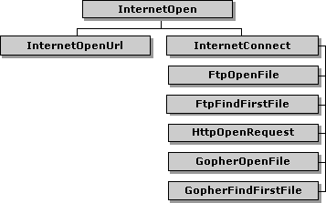

| ||||||
To compile programs that utilize the Win32® Internet functions, the header file, Wininet.h, must be in the include directory and the library file, Wininet.lib, must be in the library directory of the C/C++ compiler being used.
Before using the Win32 Internet functions, the application should attempt to make a connection to the Internet by using the InternetAttemptConnect function. This function calls the dial-up dialog box to initiate a connection to the Internet or check if a connection already exists. If this function fails, the application can enter offline mode, which allows it to access information that was cached during previous connections to the Internet.
The InternetCheckConnection function can be used to check the connection to the Internet. It attempts to ping the server designated by the Uniform Resource Locator (URL) that is passed to the function. If the FLAG_ICC_FORCE_CONNECTION flag is set and NULL was given as the URL, the function checks to see if there is an entry in the Win32 Internet API server database for the nearest server. If one exists, the function pings that server.
To begin using the Win32 Internet functions, use the InternetOpen function to establish the characteristics of the Internet connection being used. InternetOpen creates the root HINTERNET handle that is used to establish HTTP, FTP, and Gopher sessions. InternetOpen does not test the connection to the Internet to verify that the characteristics passed to the function are correct.
Use the InternetConnect function to create a specific session. InternetConnect initializes an FTP, Gopher, or HTTP session for the specified site using the arguments passed to it and creates an HINTERNET handle that is a branch off the root handle. InternetConnect does not attempt to access or establish a connection to the specified site, except in the case of an FTP session. FtpFindFirstFile, FtpOpenFile, GopherFindFirstFile, GopherOpenFile, and HttpOpenRequest functions use the handle created by InternetConnect to establish a connection to the specified site.
The following diagram illustrates the hierarchy of the HINTERNET handles.

The InternetOpen function, which creates the root HINTERNET handle, is at the top level. The next level contains the InternetOpenUrl function and the InternetConnect function. The functions that use the HINTERNET handle returned by InternetConnect make up the last level. For more information about HINTERNET handles and the handle hierarchy, see Appendix A: HINTERNET Handles.
To enable a connection to the Internet, a root HINTERNET handle must be created by using InternetOpen. Information about the user agent (the application calling the Internet functions), the type of access to the Internet, the proxy names, the hosts and addresses that bypass the proxy, and the behavior are passed to InternetOpen.
The lpszAgent parameter of InternetOpen should be given a string that contains the name of the application or entity accessing the Internet. This string is used as the user agent in the HTTP protocol. For example, Microsoft® Internet Explorer uses "Microsoft Internet Explorer".
InternetOpen supports three access types:
INTERNET_OPEN_TYPE_PRECONFIG looks at the registry values ProxyEnable, ProxyServer, and ProxyOverride. These values are located under HKEY_CURRENT_USER\Software\Microsoft\Windows\CurrentVersion\Internet Settings.
If ProxyEnable is zero, the application uses INTERNET_OPEN_TYPE_DIRECT. Otherwise, the application uses INTERNET_OPEN_TYPE_PROXY and uses the ProxyServer and ProxyOverride information.
The Win32 Internet functions provide support for SOCKS type proxies only if Internet Explorer is installed. The installation of Internet Explorer installs the Wsock32n.dll file, which the Win32 Internet functions need to support SOCKS proxies. Wsock32n.dll is not redistributable.
The Win32 Internet functions recognize two types of proxies: CERN type proxies (HTTP only) and TIS FTP proxies (FTP only). If Internet Explorer is installed, the Win32 Internet functions also support SOCKS type proxies. InternetConnect assumes, by default, that the specified proxy is a CERN proxy. If the access type is set to INTERNET_OPEN_TYPE_DIRECT or INTERNET_OPEN_TYPE_PRECONFIG, the lpszProxyName parameter of InternetOpen should be set to NULL. Otherwise, the value passed to lpszProxyName must contain the proxies in a space-delimited string. The proxy listings can contain the port number that is used to access the proxy.
To list a proxy for a specific protocol, the string must follow the format "<protocol>=<protocol>://<proxy_name>". The valid protocols are http, https, ftp, and gopher. For example, to list an FTP proxy, a valid string would be "ftp=ftp://ftp_proxy_name:21", where "ftp_proxy_name" is the name of the FTP proxy and "21" is the port number that must be used to access the proxy. If the proxy uses the default port number for that protocol, the port number can be omitted. If a proxy name is listed by itself, it is used as the default proxy for any protocols that do not have a specific proxy specified. For example, "http=http://http_proxy other" would use "http_proxy" for any HTTP operations, while all other protocols (such as FTP and Gopher) would use "other".
By default, the function assumes that the proxy specified by lpszProxyName is a CERN proxy. For example, "proxy" defaults to a CERN proxy called "proxy" that listens at port 80 (decimal). An application can specify more than one proxy, including different proxies for the different protocols. For example, if you specify "ftp=ftp://ftp-gw gopher=http://jericho:99 proxy", FTP requests are made through the FTP proxy "ftp-gw", which listens at port 21 (default for FTP), and Gopher requests are made through a CERN proxy called "jericho", which listens at port 99. All other requests (for example, HTTP requests) are made through the CERN proxy called "proxy", which listens at port 80. Note that if the application is only using FTP, for example, it would not need to specify "ftp=ftp://ftp-gw:21". It could specify just "ftp-gw". An application is only required to specify the protocol names if it will be using more than one protocol per handle returned by InternetOpen.
Host names or IP addresses that are known locally can be listed in the proxy bypass. This list can contain wildcards, "*", which cause the application to bypass the proxy server for addresses that fit the specified pattern. To list multiple addresses and host names, separate them with blank spaces in the proxy bypass string. If the "<local>" macro is specified, the function bypasses any host name that does not contain a period.
The following example shows sample calls to InternetOpen using different proxy bypass strings. The comments above each call describe what effect the bypass string has on the host names that are accessed from the HINTERNET handle it creates.
/* bypass the proxy for any host name that does not
contain a period */
hInternetRoot = InternetOpen("WinInet Example",
INTERNET_OPEN_TYPE_PROXY,"proxy","<local>", 0);
/* bypass the proxy for any host name that starts with the
letters "ms" */
hInternetRoot = InternetOpen("WinInet Example",
INTERNET_OPEN_TYPE_PROXY,"proxy","ms*", 0);
/* bypass the proxy for any host name that contains "int",
such as "internet" and "painter" */
hInternetRoot = InternetOpen("WinInet Example",
INTERNET_OPEN_TYPE_PROXY,"proxy","*int*", 0);
/* bypass the proxy for the host name "example" and any
host name that contains "test" */
hInternetRoot = InternetOpen("WinInet Example",
INTERNET_OPEN_TYPE_PROXY,"proxy","example *test*", 0);
To begin a Gopher, FTP, or HTTP session, the InternetConnect function must create a handle off the root handle returned by the InternetOpen function. InternetConnect sets the server address, port number, user name, password, and type of service.
InternetConnect uses the root HINTERNET handle created by InternetOpen to establish a session handle. If the INTERNET_FLAG_ASYNC flag was set in the call to InternetOpen, the call to InternetConnect should include a nonzero context value.
The server name can be a constant string or a variable containing a string value of type LPSTR. This string can contain either the host name (for example, www.servername.com) or IP number of the site in ASCII dotted-decimal format (for example, 11.0.1.45).
The server port is the TCP/IP port number to connect to on the server. InternetConnect uses the default port for the selected service type if the INTERNET_INVALID_PORT_NUMBER value is used. The following list contains the server port defaults included with the Win32 Internet functions.
| INTERNET_DEFAULT_FTP_PORT | Use the default port for FTP servers (port 21). |
| INTERNET_DEFAULT_GOPHER_PORT | Use the default port for Gopher servers (port 70). |
| INTERNET_DEFAULT_HTTP_PORT | Use the default port for HTTP servers (port 80). |
| INTERNET_DEFAULT_HTTPS_PORT | Use the default port for HTTPS servers (port 443). |
| INTERNET_DEFAULT_SOCKS_PORT | Use the default port for SOCKS firewall servers (port 1080). |
The user name is the address of a NULL-terminated string that contains the name of the user to log on. If this parameter is NULL, the function uses an appropriate default, except for HTTP. A NULL parameter in HTTP causes the server to return an error. For the FTP protocol, the default is anonymous.
The password is the address of a NULL-terminated string that contains the password to use to log on. If both lpszUsername and lpszPassword are NULL, the function uses the default anonymous password. In the case of FTP, the default anonymous password is the user's e-mail name. If lpszUsername is not NULL and lpszPassword is NULL, the function uses a blank password. There are four possible settings of lpszUsername and lpszPassword, which produce the behaviors shown in the following table.
| lpszUsername | lpszPassword | User name sent to FTP server | Password sent to FTP server |
| NULL | NULL | "anonymous" | User's e-mail name |
| Non-NULL string | NULL | lpszUsername | "" |
| NULL | Non-NULL string | ERROR | ERROR |
| Non-NULL string | Non-NULL string | lpszUsername | lpszPassword |
This information can be changed by using the InternetSetOption and InternetErrorDlg functions. InternetSetOption changes the user name and password values, while InternetErrorDlg displays a dialog box requesting the proper user name and password.
To define the session that is being established, InternetConnect must have the service type, flags, and context value set.
There are three service types available to InternetConnect: INTERNET_SERVICE_FTP, INTERNET_SERVICE_GOPHER, and INTERNET_SERVICE_HTTP. INTERNET_SERVICE_HTTP is used for both HTTP and HTTPS sessions.
INTERNET_FLAG_PASSIVE is the only service-specific flag used by the Win32 Internet functions. This flag can be set when the service type is INTERNET_SERVICE_FTP in order to use passive FTP semantics.
For all synchronous operations, the value of dwContext should be set to zero. If asynchronous operations were established by setting the INTERNET_FLAG_ASYNC flag in the call to InternetOpen, a nonzero value should be supplied for dwContext. For more information on asynchronous operations, see Setting Up Asynchronous Operations.
For FTP sessions, InternetConnect tries to establish a connection to the server on the Internet. HTTP and Gopher sessions do not establish a connection until a function attempts to get information from the server.
Did you find this topic useful? Suggestions for other topics? Write us!
© 1999 Microsoft Corporation. All rights reserved. Terms of use.